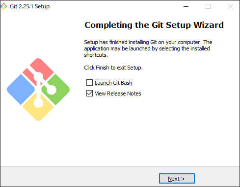
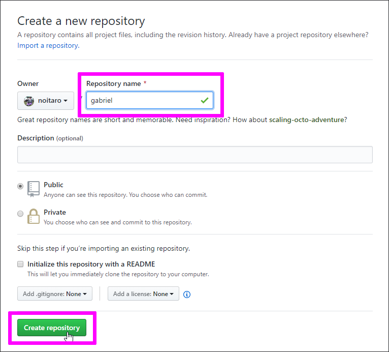
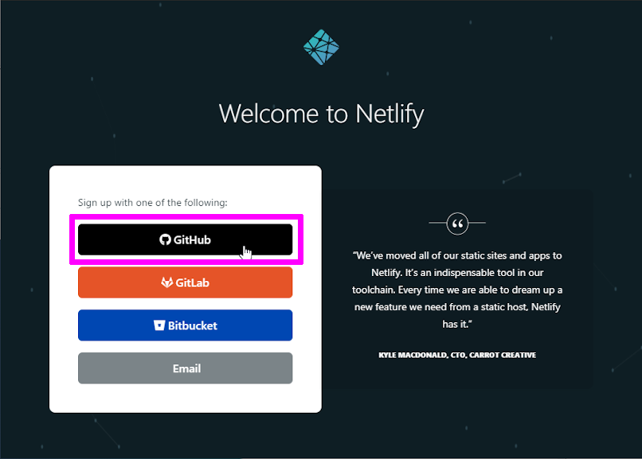
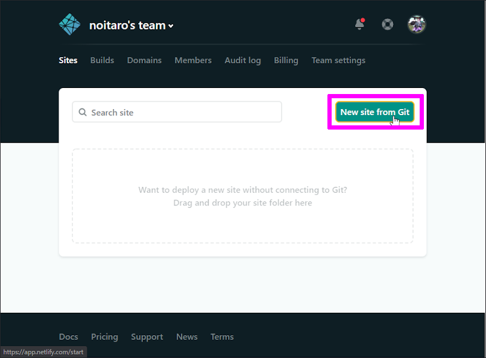

タイトルの通りで「Hexo + GitHub + Netlify でブログ構築」をして行きたいと思います。
Hexo でブログを作る
まず初めに Hexo でブログを作ります。
Hexo は、静的サイトジェネレーターツールです。
Markdown(マークダウン) で記述された文章を、静的サイト用の HTML に変換してくれます。
Node.js をインストールする
Hexo を動かすために「Node.js」をPC に入れます。
まず、公式サイトから「node-v12.16.1-x64.msi」をダウンロードします。
ダウンロードした「node-v12.16.1-x64.msi」を実行してインストールします。

インストール先は変更せずに。
設定は特に変えずに。
よく分からないオプションは外して。
レッツ インストール！！
お疲れさまでした。「Finish」で node.js のインストールは完了です。
node.js の npm を使って Hexo をインストールする
Hexo のブログ用作業フォルダを作ります。
次に 作業用フォルダで コマンドプロンプトを開きます。
一番簡単な方法は、フォルダのアドレスバーに「cmd」と入力してエンターキーを押すと簡単に開けます。
簡単に開けます。
コマンドプロンプトに「npm install hexo-cli -g」を入力して Hexo をインストールします。

Hexo 3.1.0 がインストールされました。
Hexo でブログを作る
Hexo でブログを作ります。ここでは説明のため「gabriel」というブログ名にします。
コマンドプロンプトに「hexo init gabriel」と入力すると ブログが出来上がります。
と、思ったんですが Git が入っていないため出来ませんでした。
1 | 'git' は、内部コマンドまたは外部コマンド、 |
というわけで、急遽 Git を入れることになりました。
Git をインストールする
公式サイトから「Git-2.25.1-64-bit.exe」をダウンロードします。

ダウンロードした「Git-2.25.1-64-bit.exe」を実行してインストールします。
インストール先は変えないで。

ただ使うだけなので変える必要ないかな。


通常使うエディターを選択します。私は「Visual Studio Code」を使うので変更しました。

よく分からないからそのままです。
こっちもそのまま。

触らない。

よく分からない。

気にせず「Install」を押します。

Git のインストールが完了しました。

気を取り直して
では、気を取り直してコマンドプロンプトに「hexo init gabriel」と入力します。
同じエラーが出る場合は、コマンドプロンプトを開き直すと git コマンドが使えるようになります。
GitHub に Hexo ブログをアップロードする
まず、GitHub.com で Hexo ブログ リポジトリ を作ります。
Repository name を入れて「Create repository」を押します。

次に、gabriel フォルダ内で右クリックをして「Git Bash Here」を選択します。

Git Bash コンソール が開くので、そこから GitHub に Hexo ブログをアップロードします。
Git Bash コンソール
ローカルリポジトリを初期化します。
1 | git init |
全てのファイルを Git 管理下に 登録します。
1 | git add . |
Git 管理下 のファイルを ローカルリポジトリ にコミットします。
1 | git commit -m "first commit" |
リモートリポジトリを登録します。
1 | git remote add origin https://github.com/noitaro/gabriel.git |
注意として、リモートリポジトリのアドレスは 先程作成した GitHub のアドレスを指定します。
リモートリポジトリ に プッシュ します。
1 | git push -u origin master |

これで、GitHub に アップロードが完了しました。
この時、GitHub にログインしていないと プッシュが出来ません。ログインしましょう。

GitHub.com の リポジトリ を見ると、ファイルがアップロードされている事が分かります。
Netlify でブログを公開する
最後に、Netlify でブログを公開します。
公式サイトの「Sign up」を選択して、
「GitHub」を選択して、

netlify の認証を許可します。
クイックスタートガイド は 使わないので閉じます。
「New site from Git」を押して サイトを作成します。

GitHub から Hexo ブログ を取得できるように認証を通します。
先程よりアクセス権限が多いので、再度認証を許可します。
GitHub 側 に Netlify を インストールします。
ここまですると、Netlify で GitHub のリポジトリが見えるので、Hexo のリポジトリを選択します。
デプロイ設定をします。が、特に変更することが無いので「Deploy site」を押して Hexo をデプロイします。
しばらく待ちます。

URL が表示されれば、デプロイが完了です。

URL にアクセスすれば Hexo ブログが表示されます。
おわりに
手順が長いですが、特に迷うことはないと思います。
途中で Git Bash コンソール が出てきた時は、やめようかと思いましたが そんなに難しくなかったので、これを気に慣れていけたらいいなと思います。